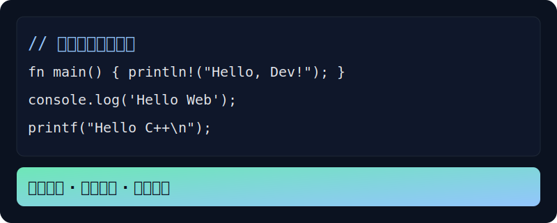

Go 入门与语法速览
覆盖环境安装、go mod、并发与通道、标准库（net/http、json、os/fs）、测试与构建。强调“快速能跑，再优化”。
完整新手路径：第一步怎么做
- 安装 Go（推荐 1.21+），确认
go version可用。 - 初始化项目：
mkdir hello && cd hello && go mod init example.com/hello - 创建
main.go输出 Hello World 并运行：go run . - 添加一个第三方包（如
golang.org/x/sync），熟悉依赖管理。 - 写一个小函数并配套测试，形成“写-测-跑”的节奏。
Hello, World
package main
import "fmt"
func main() {
fmt.Println("Hello, Go!")
}
基础语法
// 变量与类型
var a int = 1
pi := 3.14
s := "abc"
// 循环与条件
for i := 0; i < 3; i++ { fmt.Println(i) }
if a > 0 { fmt.Println("positive") }
// 结构体与方法
type User struct { Name string; Age int }
func (u User) Say() { fmt.Println("Hi", u.Name) }
u := User{"Bob", 20}; u.Say()
并发与通道
ch := make(chan int)
go func(){ ch <- 42 }()
v := <-ch
fmt.Println("got", v)
// WaitGroup + goroutine
var wg sync.WaitGroup
wg.Add(1)
go func(){ defer wg.Done(); fmt.Println("work") }()
wg.Wait()
标准库常用
// net/http
http.HandleFunc("/", func(w http.ResponseWriter, r *http.Request){
w.Write([]byte("ok"))
})
http.ListenAndServe(":8080", nil)
// JSON
type Resp struct{ Msg string }
data, _ := json.Marshal(Resp{"hello"})
// 文件系统
os.WriteFile("data.txt", []byte("hello"), 0644)
buf, _ := os.ReadFile("data.txt")
测试与基准
// 文件: add.go
func Add(a, b int) int { return a + b }
// 文件: add_test.go
func TestAdd(t *testing.T) {
if Add(1,2) != 3 { t.Fatal("bad") }
}
// 运行：
// go test ./...
// go test -bench .
构建与发布
- 本地构建：
go build -o app，运行./app。 - 交叉编译：
GOOS=linux GOARCH=amd64 go build（PowerShell 使用$env:GOOS设定）。 - 模块与版本：使用 tag 进行版本化，配合 CI 发布二进制。
项目入门（练手）
- 命令行词频统计：读取文本输出 Top-N；保存为 CSV。
- HTTP 服务：实现
/health与/echo，返回 JSON。 - 并发下载器：给出多个 URL 并行下载到本地目录。
配图


扩展实践
- Context 传递取消与超时、资源清理与错误传递。
- 并发模式：worker 池、限流、重试、熔断与断路器。
- 性能分析：
pprofCPU/内存剖析与优化迭代。
练习题
- 实现
top N词频统计，支持并发与停机恢复。 - 编写简易爬虫，处理 robots 与并发抓取、失败重试。
- 写 gRPC 服务并配套客户端，完成请求与流式响应。
理论与论文到代码索引（Go）
可用 Go 的并发模型实现工程化原型，便于学习与实验。